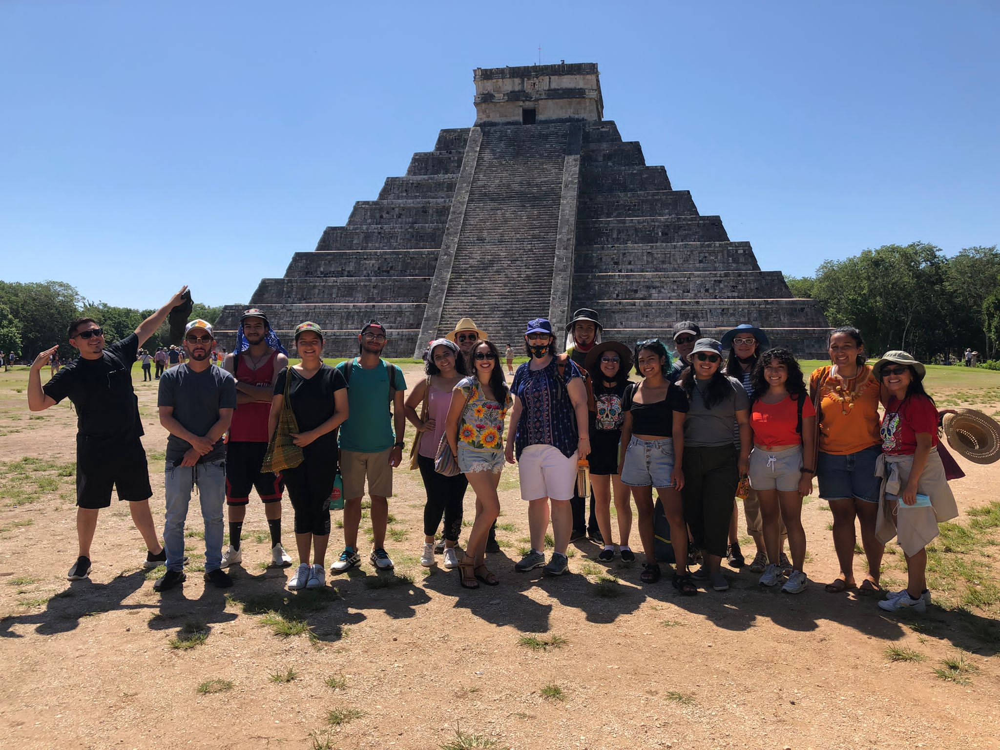
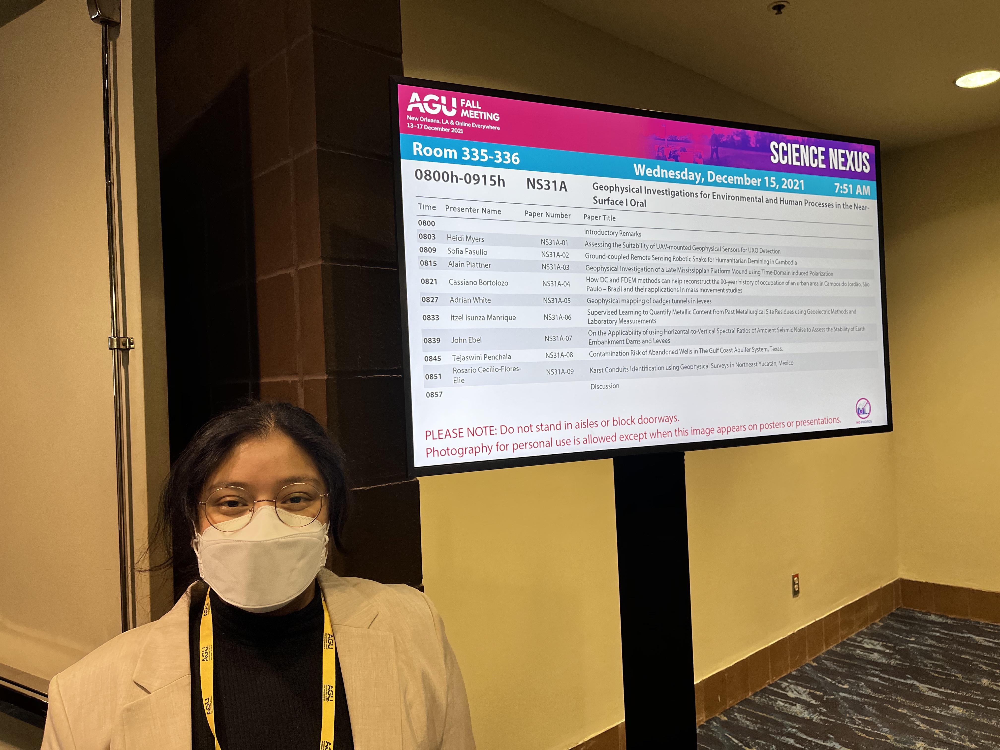
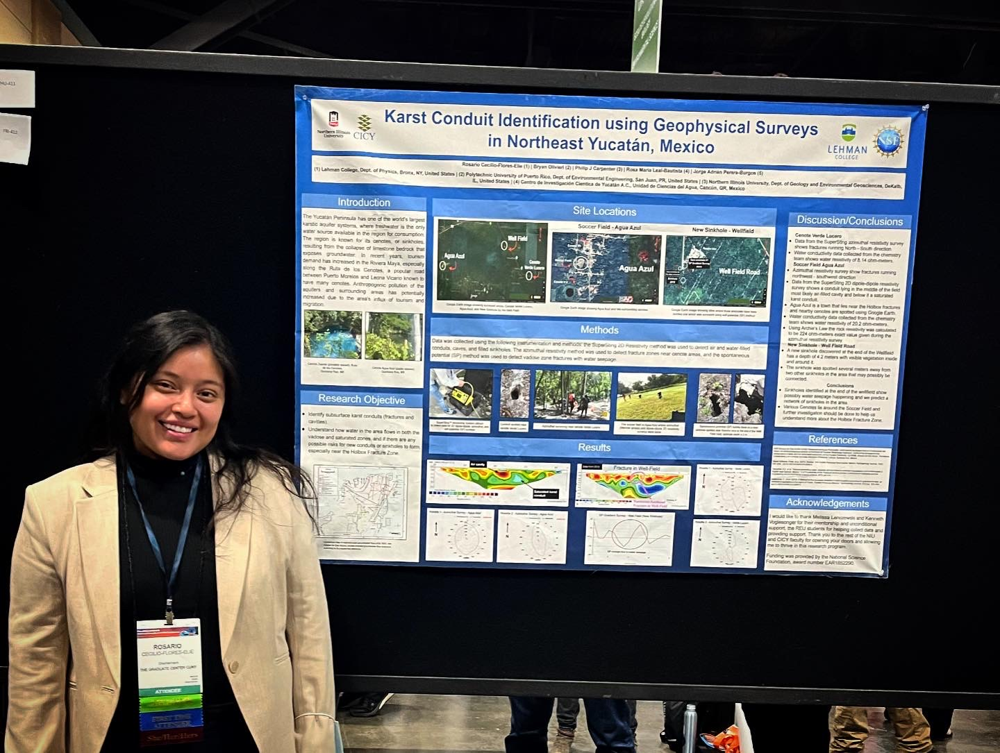
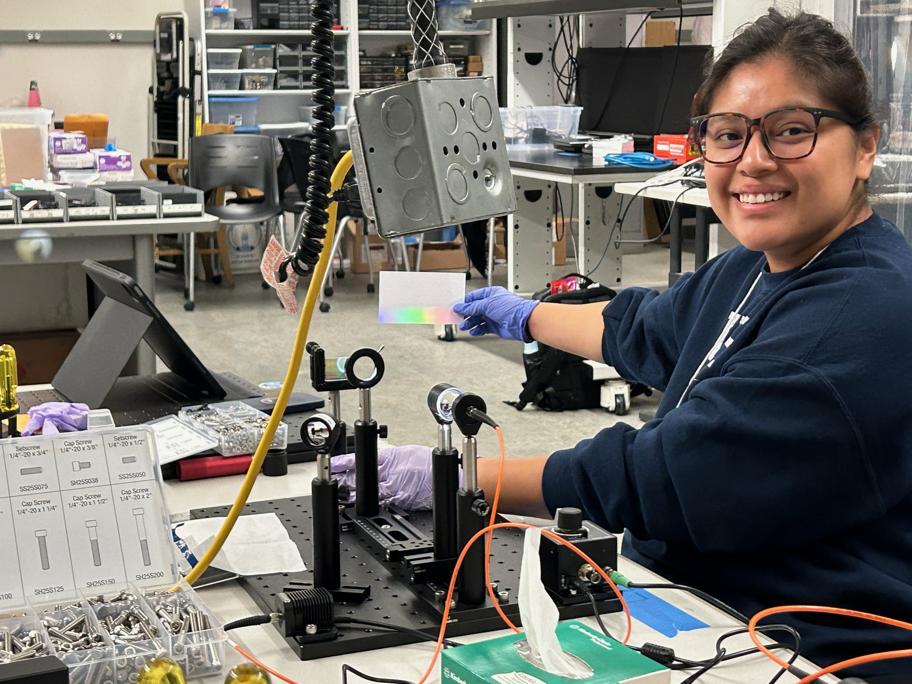
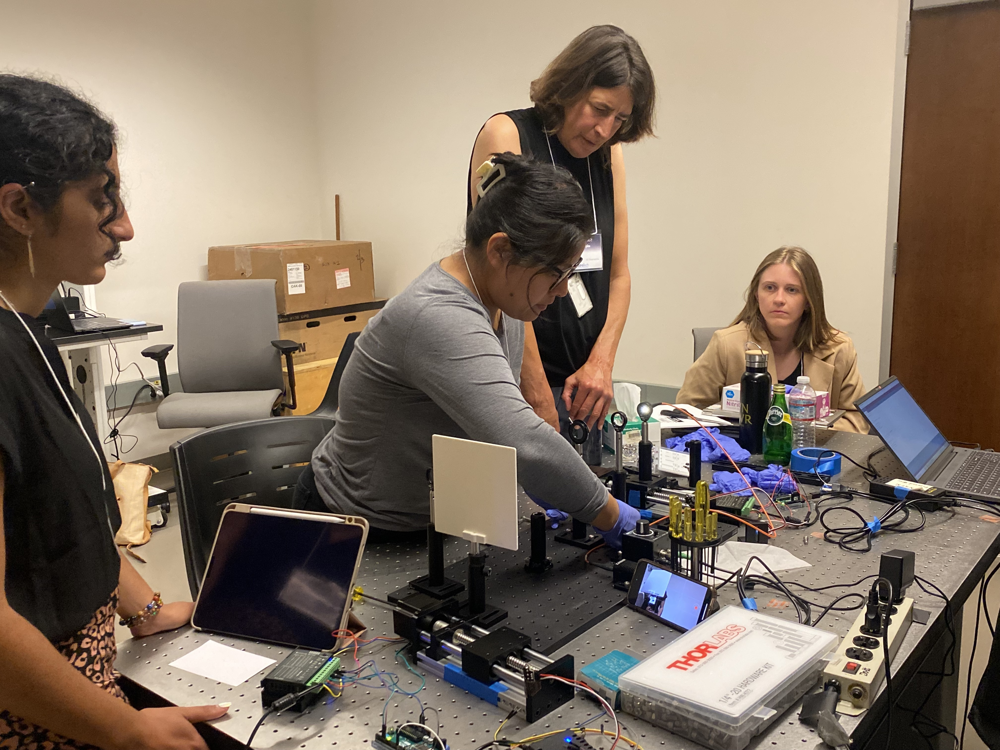
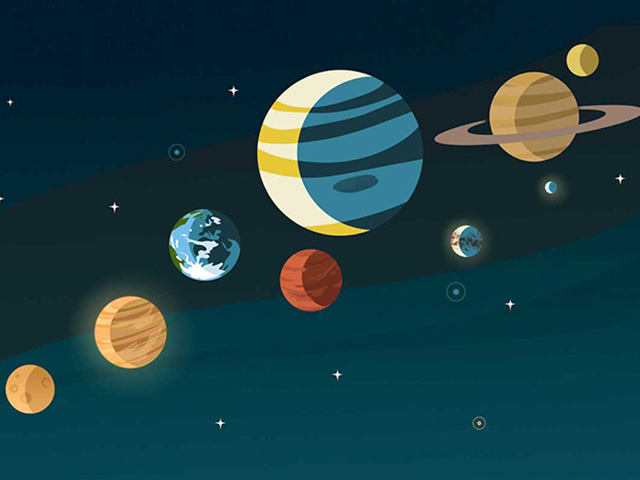
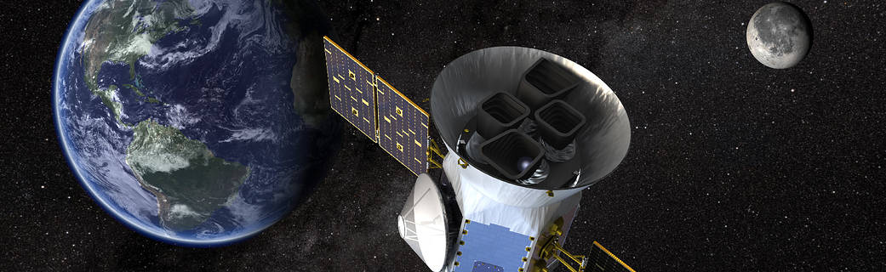
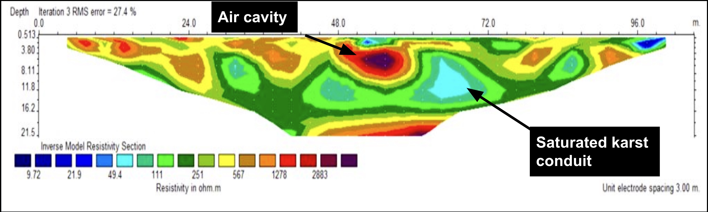
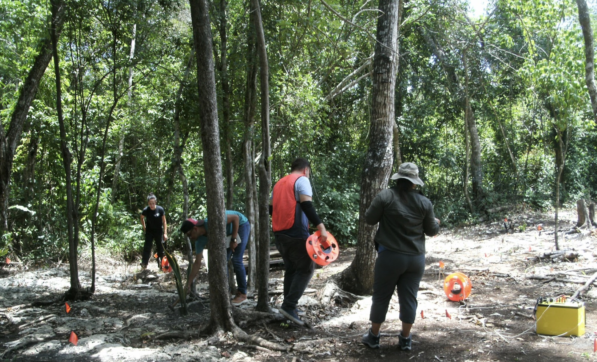

Welcome to my webpage! My name is Rosario Cecilio-Flores-Elie and I am a second-year master's student studying Astrophysics at The Graduate Center CUNY in New York City.
I am fascinated by the existence of water on moons orbiting gas giants. I am driven to decipher the factors that influence their unique conditions,
such as the composition of their surfaces, their internal structure, and their interactions with their host planets. I am also intrigued by similar environments on exoplanets,
and I aim to leverage data from the TESS and JWST missions to revolutionize our observation techniques for celestial bodies beyond our solar system, by drawing insights from studies of ocean worlds.
General Background
I am a first-generation Mexican-American from the Bronx. I love exploring new countries, indulging in diverse cuisines, staying active with swimming and weight-lifting, and cherishing moments with my husband and our beloved dog, Lenin.
Prior to pursuing Astrophysics, I was a second grade bilingual teacher for nine years serving the Highbridge community in The Bronx.
As a first-generation Latina, I empathize with the hurdles and learning curves often encountered in academia. My passion lies in promoting diversity and inclusion in Astrophysics and Planetary Sciences, ensuring that underrepresented and first-generation students are afforded equal access to opportunities, empowering them to thrive.
Visiting archaeological sites in Yucatán, México 2021

REU NIU 2021 Cohort Visiting Chichén-Itzá

Presenting my research at the AGU Conference in 2021

Presenting my research at the NDiSTEM SACNAS Conference in 2022

Learning about Optomechanics at AstroTech 2023 - UC Berkeley

AstroTech 2023 - UC Berkeley
Close
Research

Credit: NASA
I've developed a diverse skill set, involving geophysics surveys in Mexico,
Python-based analysis of TESS data concerning young stars, and ongoing work on plotting planetary separation-mass ratios.
These efforts collectively contribute to revealing insights about ocean worlds,
exoplanets, and their potential habitability across diverse star systems,
aiming to establish connections with our own solar system.
Read more about my research by clicking the buttons below.
"Rothermich, A., Faherty, J., Bardalez-Gagliuffi, D., et al. (incl
Cecilio-Flores-Elie, R.
(
In review
) -
Identification of New Brown Dwarf Co-Moving Companions
Close
TESS Light Curves

Credit: NASA
I have analyzed data from NASA's TESS mission, a space telescope designed to discover exoplanets by observing star brightness changes during planetary transits. Beyond its primary mission, TESS provides a vast dataset of stellar light curves that reveal insights into stellar behavior.
My work focuses on young co-moving stars, utilizing TESS's light curves to determine rotational periods and identify indicators of activity like solar flares, rapid rotation, and potential binarity. By studying these features, I contribute to understanding the dynamics of these young stars, enriching our knowledge of their evolution and interactions.
I'm presently engaged in a data visualization project centered around mapping the mass ratios of planets and their moons.
Building upon Faherty et al.'s 2021 study, which explored the relationship between separation and mass ratios among stars, brown dwarfs, and exoplanets, my ongoing analysis aims to reveal insights into planetary dynamics, companion objects, and host primaries. This endeavor significantly contributes to our comprehension of celestial behavior and investigates potential correlations between planet mass ratios and the activity of their accompanying moons.
As my proficiency in Python grows, I've been employing user-friendly packages like "lightkurve" to grasp the techniques involved in detecting transiting planets around distant stars. Furthermore, I'm leveraging the machine learning skills I've acquired through my coursework to initiate a compact project centered on the pursuit of exoplanet discovery.
During the summer of 2021, I participated in the REU "Water Quality in the Yucatán Peninsula" program, led by Northern Illinois University.
The project focused on the Yucatán Peninsula, known for its vast karstic aquifer system supplying regional freshwater.
I worked under Dr. Philip J. Carpenter, using specialized equipment like The SuperSting™ to conduct geophysical surveys near cenotes, sinkholes formed by collapsed limestone revealing groundwater.
These surveys helped us understand water flow, quality, and potential anthropogenic impacts due to tourism and migration.
Notably, I discovered new locations, including Agua Azul, where I found water-filled conduits, fracture zones, and even an air cavity.
My findings were presented at the American Geophysical Union (AGU) and NDiSTEM - Society for Advancement of Chicanos/Hispanics & Native Americans in Science (SACNAS) conferences in 2021 and 2022, shedding light on the region's water dynamics and pollution concerns.

Results from 2D Dipole-Dipole Survey at Agua Azul Site
Taking a water break under the tarp Far Right: Co-PI - Melissa Lenczewski

Azimuthal Survey at Cenote Verde Lucero
Close
Conference Research Talks and Posters:
"Cecilio-Flores-Elie, R., Carpenter, P., Olivieri, B., Leal-Bautista, R., Perera-Burgos, J.
Karst Conduits Identification using Geophysical Surveys in Northeast Yucatán, México
I hold a NYS teaching certification in Childhood Education with a Bilingual Extension.
During my tenure at P.S./I.S. 218, I spearheaded the development of culturally-responsive literacy units for second grade. These units integrated urban experiences and cross-disciplinary content while utilizing scaffolding techniques to cater to diverse learners, including those with disabilities and English language learners.
Furthermore, I provided focused mentorship to 1-2 student-teachers annually. Through this mentorship, I shared specialized insights and pedagogical expertise, fostering their professional growth and advancement.
While I am no longer actively involved in classroom instruction, my commitment to cultivating a supportive environment for future students, mentees, and colleagues remains unwavering.
In June 2023, I had the privilege of participating in CUNY's Science Communication Symposium, where I had the opportunity to showcase my work during a presentation on the active moon Enceladus. You can view my presentation here.
I was honored to receive the Best Public Facing Translation award for effectively translating complex scientific ideas into accessible concepts. This recognition reaffirms my commitment to making science engaging and comprehensible to a broader audience.